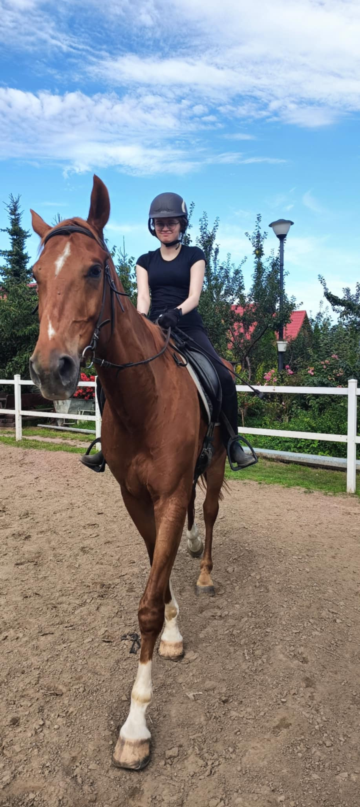

Cześć, nazywam się Maria, ale większość nazywa mnie Marysia. Lubię czytać książki, grać w gry, oglądać filmy i seriale oraz konie! Jeżdżę konno od 10 roku życia, niestey z długimi przerwami. Chciałam poszerzyć swoją wiedzę oraz pomóc komuś dowiedzieć się czegoś o koniach dlatego stworzyłam tę stronę. Mam nadzieję że znajdzies tutaj coś ciekawego. Pozdrawiam i życzę miłej lektury.
